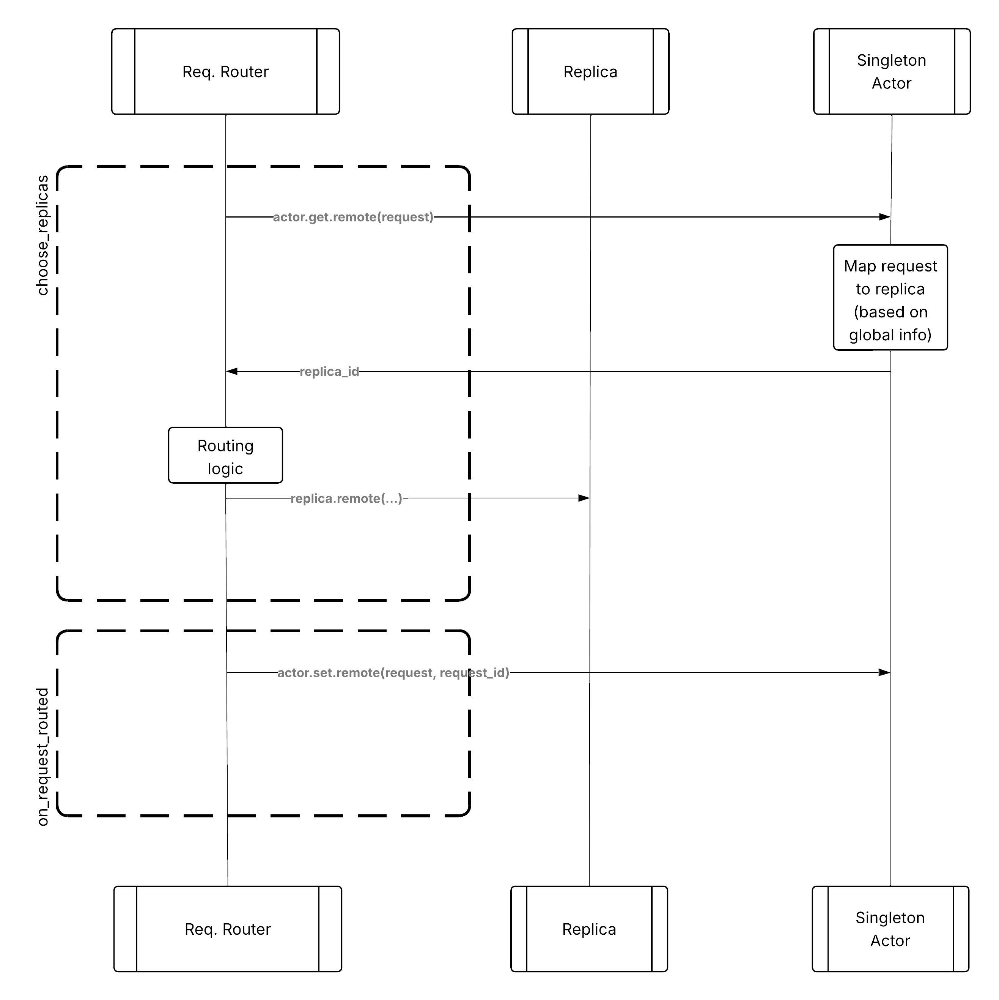
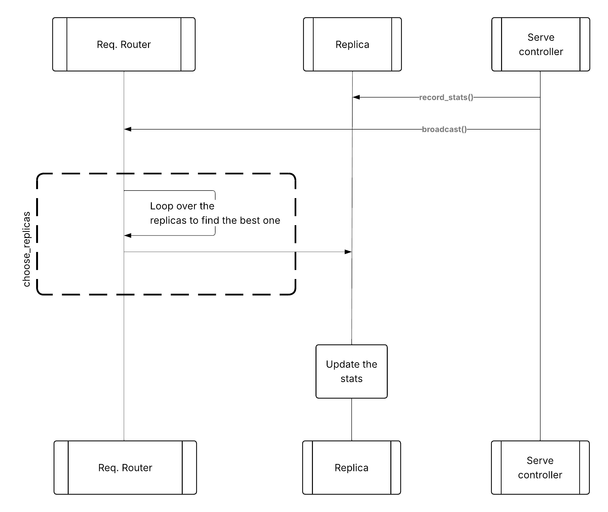

Request routing#
Ray Serve LLM provides customizable request routing to optimize request distribution across replicas for different workload patterns. Request routing operates at the replica selection level, distinct from ingress-level model routing.
Routing versus ingress#
You need to distinguish between two levels of routing:
Ingress routing (model-level):
Maps
model_idto deploymentExample:
OpenAiIngressgets/v1/chat/completionswithmodel="gptoss"and maps it to thegptossdeployment.
Request routing (replica-level):
Chooses which replica to send the request to
Example: The
gptossdeployment handle inside theOpenAiIngressreplica decides which replica of the deployment (1, 2, or 3) to send the request to.
This document focuses on request routing (replica selection).
HTTP Request → Ingress (model routing) → Request Router (replica selection) → Server Replica
Request routing architecture#
Ray Serve LLM request routing operates at the deployment handle level:
┌──────────────┐
│ Ingress │
│ (Replica 1) │
└──────┬───────┘
│
│ handle.remote(request)
↓
┌──────────────────┐
│ Deployment Handle│
│ + Router │ ← Request routing happens here
└──────┬───────────┘
│
│ Chooses replica based on policy
↓
┌───┴────┬────────┬────────┐
│ │ │ │
┌──▼──┐ ┌──▼──┐ ┌──▼──┐ ┌──▼──┐
│ LLM │ │ LLM │ │ LLM │ │ LLM │
│ 1 │ │ 2 │ │ 3 │ │ 4 │
└─────┘ └─────┘ └─────┘ └─────┘
Available routing policies#
Ray Serve LLM provides multiple request routing policies to optimize for different workload patterns:
Default routing: Power of Two Choices#
The default router uses the Power of Two Choices algorithm to:
Randomly sample two replicas.
Route to the replica with fewer ongoing requests.
This provides good load balancing with minimal coordination overhead.
Prefix-aware routing#
The PrefixCacheAffinityRouter optimizes for workloads with shared prefixes by routing requests with similar prefixes to the same replicas. This improves KV cache hit rates in vLLM’s Automatic Prefix Caching (APC).
The routing strategy:
Check load balance: If replicas are balanced (queue difference < threshold), use prefix matching.
High match rate (≥10%): Route to replicas with highest prefix match.
Low match rate (<10%): Route to replicas with lowest cache utilization.
Fallback: Use Power of Two Choices when load is imbalanced.
For more details, see Prefix-aware routing.
Design patterns for custom routing policies#
Customizing request routers is a feature in Ray Serve’s native APIs that you can define per deployment. For each deployment, you can customize the routing logic that executes every time you call .remote() on the deployment handle from a caller. Because deployment handles are globally available objects across the cluster, you can call them from any actor or task in the Ray cluster. For more details on this API, see Use Custom Algorithm for Request Routing.
This allows you to run the same routing logic even if you have multiple handles. The default request router in Ray Serve is Power of Two Choices, which balances load equalization and prioritizes locality routing. However, you can customize this to use LLM-specific metrics.
Ray Serve LLM includes prefix-aware routing in the framework. There are two common architectural patterns for customizing request routers. There are clear trade-offs between them, so choose the suitable one and balance simplicity with performance:
Pattern 1: Centralized singleton metric store#
In this approach, you keep a centralized metric store (for example, a singleton actor) for tracking routing-related information. The request router logic physically runs on the process that owns the deployment handle, so there can be many such processes. Each one can query the singleton actor, creating a multi-tenant actor that provides a consistent view of the cluster state to the request routers.
The single actor can provide atomic thread-safe operations such as get() for querying the global state and set() for updating the global state, which the router can use during choose_replicas() and on_request_routed().
┌─────────┐ ┌─────────┐ ┌─────────┐
│ Ingress │────►│ Metric │◄────│ Ingress │
│ 1 │ │ Store │ │ 2 │
└────┬────┘ └─────────┘ └────┬────┘
│ │
└────────────────┬──────────────┘
│
┌──────────┴──────────┐
│ │
┌────▼────┐ ┌────▼────┐
│ LLM │ │ LLM │
│ Server │ │ Server │
└─────────┘ └─────────┘
{kind=link}

Centralized metric store pattern for custom routing#
Pros:
Simple implementation - no need to modify deployment logic for recording replica statistics.
Request metrics are immediately available.
Strong consistency guarantees.
Cons:
A single actor can become a bottleneck in high-throughput applications where TTFT is impacted by the RPC call (~1000s of requests/s).
Requires an additional network hop for every routing decision.
Pattern 2: Metrics broadcasted from Serve controller#
In this approach, the Serve controller polls each replica for local statistics and then broadcasts them to all request routers on their deployment handles. The request router can then use this globally broadcasted information to pick the right replica. After a request reaches the replica, the replica updates its local statistics so it can send them back to the Serve controller when the controller polls it next time.
┌──────────────┐
│ Serve │
│ Controller │
└──────┬───────┘
│ (broadcast)
┌─────────┴─────────┐
│ │
┌────▼────┐ ┌────▼────┐
│ Ingress │ │ Ingress │
│ +Cache │ │ +Cache │
└────┬────┘ └────┬────┘
│ │
└────────┬──────────┘
│
┌──────┴──────┐
│ │
┌────▼────┐ ┌────▼────┐
│ LLM │ │ LLM │
│ Server │ │ Server │
└─────────┘ └─────────┘
{kind=link}

Broadcast metrics pattern for custom routing#
Pros:
Scalable to higher throughput.
No additional RPC overhead per routing decision.
Distributed routing decision making.
Cons:
Time lag between the request router’s view of statistics and the ground truth state of the replicas.
Eventual consistency - routers may base decisions on slightly stale data.
More complex implementation requiring coordination with the Serve controller.
Use Pattern 1 (Centralized store) when you need strong consistency, have moderate throughput requirements, or want simpler implementation.
Use Pattern 2 (Broadcast metrics) when you need very high throughput, can tolerate eventual consistency, or want to minimize per-request overhead.
Custom routing policies#
You can implement custom routing policies by extending Ray Serve’s RequestRouter base class. For detailed examples and step-by-step guides on implementing custom routers, see Use Custom Algorithm for Request Routing.
Key methods to implement:
choose_replicas(): Select which replicas should handle a request.on_request_routed(): Update the router state after a request is routed.on_replica_actor_died(): Clean up the state when a replica dies.
Utility mixins#
Ray Serve provides mixin classes that add common functionality to routers. See the Use Custom Algorithm for Request Routing for examples:
LocalityMixin: Prefers replicas on the same node to reduce network latency.MultiplexMixin: Tracks which models are loaded on each replica for LoRA deployments.FIFOMixin: Ensures FIFO ordering of requests.
Router lifecycle#
The typical lifecycle of request routers includes the following stages:
Initialization: Router created with list of replicas.
Request routing:
choose_replicas()called for each request.Callback:
on_request_routed()called after successful routing.Replica failure:
on_replica_actor_died()called when replica dies.Cleanup: Router cleaned up when deployment is deleted.
Async operations#
Routers should use async operations for best performance. The following example demonstrates the recommended pattern:
# Recommended pattern: Async operation
async def choose_replicas(self, ...):
state = await self.state_actor.get.remote()
return self._select(state)
# Not recommended pattern: Blocking operation
async def choose_replicas(self, ...):
state = ray.get(self.state_actor.get.remote()) # Blocks!
return self._select(state)
State management#
For routers with state, use appropriate synchronization. The following example shows the recommended pattern:
class StatefulRouter(RequestRouter):
def __init__(self):
self.lock = asyncio.Lock() # For async code
self.state = {}
async def choose_replicas(self, ...):
async with self.lock: # Protect shared state
# Update state
self.state[...] = ...
return [...]
See also#
Prefix-aware routing - user guide for deploying prefix-aware routing
Use Custom Algorithm for Request Routing - Ray Serve guide for implementing custom routers
RequestRouterAPI Reference - complete API documentation